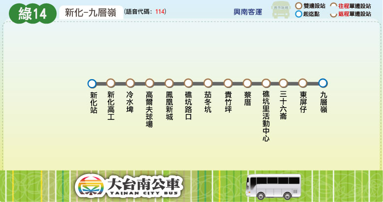

Tainan Bus for FUN
路線圖
路線資訊
票價表
時刻表
轉乘資訊
大台南公車 ─ 綠14 路線圖
Tainan Bus Green 14, Route Map

查詢路線Google Map
大台南公車 ─ 綠14 路線資訊
Tainan Bus Green 14, Route Information
起訖點
新化 － 九層嶺
營運公司
興南客運
首／末班車發車時刻
班距
固定班次
收費方式
里程計費
公車動態資訊
大台南公車 ─ 綠14 票價表
Tainan Bus Green 14, Bus Fare
全票
半票
投現
-
-
電子票證
-
-
大台南公車 ─ 綠14 時刻表
Tainan Bus Green 14, Bus schedule
大台南公車 ─ 綠14 主要轉乘點資訊
Tainan Bus Green 14, Transfer information